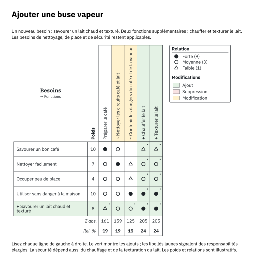
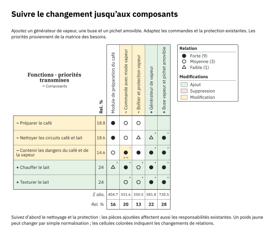

Déploiement de la fonction qualité · Typst natif
Des besoins
aux choix de conception.
Relier les exigences. Transmettre les priorités. Comprendre les changements.
Qualitree transforme vos hypothèses de conception en maisons de la qualité précises et reproductibles. Pour garder le raisonnement au plus près du dessin.
Typst 0.15.1+ Aucune dépendance à un autre package à l’exécution

Besoins → fonctions → composants
Une maison de la qualité rend les compromis visibles.
Qualitree réunit matrice, corrélations, cibles et variantes dans un même document. Les identifiants stables relient les étapes et permettent de comparer leurs évolutions.
01 / Démarrage
Une petite matrice.
Un point de départ utile.
Commencez par quelques besoins et des réponses mesurables. Ajoutez ensuite le toit, les comparaisons et les étapes de déploiement selon les besoins du modèle.
Installer Typst
Utilisez Typst 0.15.1 ou une version ultérieure. Sur macOS, installez-le avec Homebrew. Sur les autres plateformes, téléchargez un exécutable depuis les versions officielles de Typst.
brew install typst
typst --versionCompiler un exemple du dépôt
Clonez le dépôt puis lancez le compilateur depuis sa racine. L’option --root permet aux exemples d’importer le package situé dans le répertoire parent. L’option --font-path charge les polices IBM Plex Sans et Serif fournies.
git clone https://github.com/tychota/qfd-typst.git
cd qfd-typst
mkdir -p build
typst compile --root . --font-path fonts examples/fr/revisions.typ build/revisions-fr.pdfÉcrire une première maison de la qualité
Enregistrez ce code dans examples/premiere.typ. Chaque ligne correspond à un besoin, chaque colonne à une réponse technique. Les noms des paramètres de l’API restent en anglais ; les libellés sont libres.
#import "../lib.typ": qfd
#set page(width: 24cm, height: auto, margin: 1cm)
#qfd(
whats: ("Préparer facilement", "Nettoyer facilement"),
hows: ("Temps de préparation", "Pièces à laver"),
importance: (5, 3),
matrix: ((9, 1), (1, 9)),
targets: ("≤ 2 min", "≤ 3 pièces"),
labels: (whats: [Besoins], hows: [Réponses techniques]),
)typst compile --root . --font-path fonts examples/premiere.typ build/premiere.pdfUtiliser le package dans un autre projet
Copiez lib.typ et le dossier src/ dans votre projet, puis importez le fichier par son chemin relatif. Vous pouvez aussi placer le package complet dans typst/packages/local/qualitree/0.1.0/, sous le répertoire de données Typst de votre système :
- macOS :
~/Library/Application Support/typst/packages/local/qualitree/0.1.0/ - Linux :
$XDG_DATA_HOME/typst/packages/local/qualitree/0.1.0/(généralement~/.local/share/…) - Windows :
%APPDATA%\typst\packages\local\qualitree\0.1.0\
#import "@local/qualitree:0.1.0": qfdLe package local doit contenir typst.toml, lib.typ et src/. La demande d’inscription à Typst Universe est ouverte ; l’import @preview ne sera disponible qu’après acceptation.
02 / Référence de l’API
Une matrice.
Plusieurs façons de raisonner.
qfd dessine une maison de la qualité à partir de données positionnelles. Les fonctions de déploiement ajoutent des entités nommées, la transmission des priorités et la comparaison des versions.
qfd(…)
Utilisez des arguments nommés, avec une matrice complète matrix ou des relations éparses relations. Les intensités sont 0, 1, 3 et 9 : aucune, faible, moyenne et forte.
| Argument | Signification |
|---|---|
whats | Tableau non vide des libellés de lignes : besoins, fonctions ou autres exigences. |
hows | Tableau non vide des libellés de colonnes : réponses à ces exigences. |
importance | Un poids positif ou nul par ligne. Active le calcul des priorités des colonnes. |
matrix | Tableau organisé par lignes, avec une intensité pour chaque paire ligne/colonne. |
relations | Triplets (ligne, colonne, intensité), avec des indices commençant à 1. Une cellule omise vaut zéro. |
targets | Une cible par colonne, affichée sous la matrice. |
correlations | Entrées du toit (colonne, colonne, signe), indices à partir de 1. Signes possibles : "++", "+", "-", "--". |
alternatives | Enregistrements tels que (label: "Café", scores: (4, 3)), avec une note par ligne. Une valeur manquante s’écrit none. L’échelle score-range vaut (0, 5) par défaut. |
Régler le dessin
Choisissez font et font-size. La hauteur des lignes et des en-têtes s’adapte automatiquement au texte ; vous pouvez aussi fixer des dimensions. Ajustez what-width, cell-size et les marges internes pour les matrices denses. Les options show-roof, show-basement et show-competitive contrôlent les panneaux visibles.
Les valeurs par défaut et les règles de validation figurent dans la référence complète en anglais.
qfd-stage(…)Définir une étape nommée
Chaque ligne et colonne possède un identifiant stable et un libellé indépendant. Le texte peut évoluer sans modifier l’identité du besoin ou du composant. Une étape relie besoins et fonctions, fonctions et composants, ou deux autres ensembles pertinents. Le résultat est un dictionnaire à transmettre à qfd.
#import "../lib.typ": qfd, qfd-stage, qfd-deploy, qfd-diff
#let besoins = qfd-stage(
rows: (
(id: "simple", label: "Préparer facilement", weight: 5),
(id: "clean", label: "Nettoyer facilement", weight: 3),
),
columns: (
(id: "setup", label: "Temps de préparation", direction: "minimize"),
(id: "wash", label: "Pièces à laver", direction: "minimize"),
),
matrix: ((9, 1), (1, 9)),
labels: (whats: [Besoins], hows: [Réponses techniques]),
)
#qfd(..besoins)qfd-deploy(…)Transmettre les priorités
Les colonnes de l’étape précédente deviennent les lignes de la suivante, en conservant leurs identifiants et leurs libellés. Les priorités relatives sont transmises sans arrondi : seuls les nombres affichés sont arrondis. Fournissez les nouvelles colonnes et la matrice des relations ; la fonction calcule les poids des lignes.
qfd-diff(…)Comparer deux versions
Les étapes sont alignées par identifiant pour montrer ajouts, suppressions et modifications, même après un réordonnancement. Les éléments supprimés restent visibles mais ne contribuent plus aux priorités actuelles. Dessinez le résultat avec #qfd(..qfd-diff(avant, apres)). Les deux étapes doivent posséder des poids, ou toutes deux les omettre. La comparaison ne prend pas en charge les profils de variantes ni les lignes de synthèse personnalisées.
+ Ajout− Suppression~ Modification
03 / Exemples
Que change l’ajout
de boissons lactées ?
Partez d’une machine qui prépare uniquement du café. Ajoutez une buse vapeur. Suivez un nouveau besoin jusqu’aux fonctions, puis aux composants.
Ce modèle pédagogique utilise des poids et des relations illustratifs. Lisez chaque ligne de gauche à droite : les nouvelles capacités doivent toujours respecter les besoins existants de nettoyage, d’encombrement et de sécurité.
{kind=link}

Les bandes vertes montrent les ajouts. Les besoins existants restent visibles.PDF ↓
{kind=link}

Suivez le nettoyage et la protection jusqu’aux commandes et au boîtier.PDF ↓
Deux réponses au besoin de boissons lactées
Comparez les deux concepts au même état initial. L’option automatique ajoute un besoin de confort : disposer de lait entre les utilisations. Les matrices décrivent des responsabilités de conception, pas un classement fondé sur des performances mesurées.
| Choix | Buse manuelle et pichet | Automatisation et réfrigération |
|---|---|---|
| Préparation | L’utilisateur remplit et place le pichet ; la vapeur chauffe et texture le lait. | Un circuit dose le lait dans un mélangeur à vapeur. |
| Stockage | La réfrigération du lait reste extérieure à l’appareil. | Un réservoir réfrigéré intégré assure le stockage. |
| Contraintes existantes | Manipulation du pichet, nettoyage de la buse, protection contre la vapeur et place sur le plan de travail. | Nettoyage du circuit, stockage froid, puissance partagée et encombrement à réévaluer. |
| Composants | Générateur de vapeur, buse et pichet ; commandes et protection adaptées. | Générateur, mélangeur, réservoir froid et circuit lait ; commandes et protection adaptées. |
Lire les deux matrices de l’option automatique ↗
Explorer le déploiement détaillé de la machine à café
L’étude détaillée couvre aussi la température, les cafés successifs, la conservation du café et la collecte des déchets. Ses priorités sont calculées indépendamment de ce modèle simplifié. Les documents détaillés suivants sont en anglais.
Style des profils
Des couleurs
au rôle explicite.
Les profils utilisent du bleu, de l’orange brûlé, du vert, du prune et de l’ocre assombris. Des traits de même épaisseur évitent de suggérer une variante préférée. Formes et pointillés complètent la couleur.
Cette adaptation personnalisée provient d’un sous-ensemble de la palette Okabe–Ito. Chaque contour dépasse un contraste calculé de 4,5:1 sur blanc, sans garantir la distinction de toutes les paires de couleurs. Les fonds verts, rouges et jaunes des comparaisons gardent leur sens propre : ajout, suppression et modification.
Origine, mesures de contraste et personnalisation (anglais) ↗
04 / Méthodologie
Un raisonnement
aussi lisible que le résultat.
Le QFD structure la discussion sur les priorités. La pertinence du dessin dépend des hypothèses et des éléments qui les étayent.
Partir des besoins
Décrivez le résultat attendu sans choisir trop tôt une solution. Distinguez les seuils d’acceptation des préférences qui peuvent faire l’objet de compromis.
Nommer les fonctions
Une fonction décrit une transformation ou un stockage : chauffer de l’eau, contenir un liquide, appliquer une pression. Un composant réalise cette fonction ; une technologie est une manière possible de le réaliser.
Évaluer les relations
Notez la contribution de chaque réponse à chaque besoin. Une cellule vide signifie qu’aucune contribution n’est modélisée. Expliquez les hypothèses importantes dans les notes de conception.
Calculer puis questionner
Multipliez chaque intensité par le poids de sa ligne et additionnez par colonne. Les priorités relatives divisent chaque total par la somme des totaux. Si cette somme est nulle, les priorités valent zéro.
Conserver l’historique
Gardez les identifiants lorsque les libellés ou l’ordre changent. Comparez les versions et notez les raisons des changements. Étudiez la sensibilité des décisions proches plutôt que de traiter les pourcentages arrondis comme des certitudes.
Lectures et sources
Les commentaires du code suivent les conseils d’antirez sur les commentaires et la maintenabilité. Pour le contexte QFD : The House of Quality, John R. Hauser et Don Clausing, Harvard Business Review, 1988. Ces lectures apportent un cadre méthodologique ; les poids et relations des exemples restent illustratifs.
05 / Nouveautés
Une base
à faire évoluer.
0.1.0
Première version- Maisons de la qualité natives Typst : relations, toit de corrélations, cibles et profils de variantes.
- Étapes nommées, identifiants stables et transmission des priorités sans arrondi.
- Comparaisons avec bandes d’ajout et de suppression et détails des modifications.
- Dimensions automatiques, typographie, espacement et indicateurs de direction configurables.
- Guide bilingue, code Typst coloré et exemples pédagogiques de machine à café.
Consultez le journal des versions (anglais) pour le détail des évolutions.
06 / Contribuer
Rester simple.
Rendre vérifiable.
Les contributions doivent préserver la séparation entre modèle, calculs, mise en page et dessin.
Pour signaler un problème, joignez un fichier Typst minimal, la version du compilateur et les résultats attendu et obtenu. Pour un calcul, ajoutez un petit cas numérique ; pour la mise en page, un rendu qui montre la différence.
Les exemples doivent utiliser des données partageables et correctement attribuées. Explicitez les hypothèses et privilégiez les capacités natives de Typst.